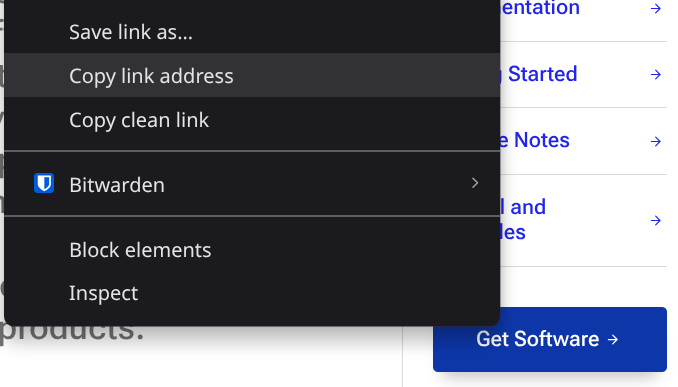

How to Use the Sample App¶
In this tutorial we will walk you from start to finish getting a model working with the QNN Sample App. The Sample App provides a reference implementation for how to use the QNN API to execute inferences on your target device with your model. After you understand how to build the app and use it, you can use its implementation as a starting point for allowing your own on-target application to interact with your model.
The recommended developer flow is:
Follow these steps to prove you can:
Execute your model on the target device.
Build and use an app on your target device.
Adapt sections of the Sample App into your on-device application for your use case (or add your own logic to expand the Sample App based on your needs).
You should read the code in the Sample App to understand what is going on. You can use the API docs to identify how you can change the code for your use case.
This tutorial as a whole is designed to show you how to use QNN across different host devices, target devices, and situations. In order to provide actionable commands for all of those paths, this tutorial is structured like a “choose your own adventure” where you will frequently be able to choose the steps that are relevant for your situation.
Note
Throughout this tutorial, we frequently use commands and environment variables to help you take the right actions. If any command does not work for you, we recommend you copy it and any errors into an AI chat of your choosing and ask the AI to explain what the command is doing and why it was not working for you.
Before you start taking actions, it’s important for you to note down the configuration(s) you want to support. Having those written down ahead of time will help you choose the right paths through this tutorial for your situation. You can also use the default configuration (underneath these questions) if you aren’t sure yet what configuration you want.
Questions to Answer¶
Warning
If you don’t know what answers to give, you can skip past these questions and use the default configuration underneath.
What AI model do you want to use?
Qualcomm’s software allows you to work with your own models, or use models from various popular frameworks. You can also explore Qualcomm’s AI Hub to find models for your use case.
Example model: EfficientNet Lite
Which AI framework is the model using?
You can usually tell what framework a model was built with by looking at the file extension of it.
Ex. ONNX (
.onnx), Tensorflow (.pb,.tflitefor TensforflowLite format), PyTorch (.pt) etc.
What is the architecture and OS of your host machine?
You can run the following commands to learn more about your device:
On Linux:
uname -afor architecture andcat /etc/os-releasefor the OS.On Windows:
systeminfofor architecture andGet-ComputerInfo | Select-Object WindowsProductName, WindowsVersion, OsArchitecture, OsNamefor the OS.
Ex.
x86_64Ubuntu 22.04
What is the architecture and OS of your target device?
See the previous question for commands you can run to investigate this.
Ex.
ARM 64Android
Which processor(s) on the target device do you want to use for your AI models? (Ex. CPU, GPU, HTP, DSP, etc.)
This choice is mostly based on the specs of your target device and what processors it has available.
Ex.
CPU
Default Configuration¶
You can use this to experience the QNN workflow for running inferences with a model on a target device:
Model: EfficientNet Lite
Framework: ONNX
Host machine architecture and OS: Use your current dev computer (either Linux or Windows, there is no support for Mac as a host machine)
Target device: The same as your host device (testing locally)
Processor(s): CPU
Note
When you are presented with choices going forward, refer back to your answers to these questions.
Final Notes Before Starting¶
Warning
As of now, the steps in this guide are written primarily for a Linux host machine. These are still the right sequence of steps for Windows. To use this with a Windows machine, you should:
Use WSL to be able to use linux-style commands. Alternatively, you can use an AI chat along with the below rules to adapt commands to Powershell equivalents - the overall flow will be equivalent.
Follow the Windows Setup steps before any of these steps.
Use
.dllequivalents of any.sofile. Note: The filename will be different, as the Linux equivalents normally start withlib, while the Windows ones do not.Use
qnn-sample-app.exeinstead of theqnn-sample-app.
Note
Keep in mind that all steps below are required unless they explicitly say they are “(optional)”.
Part 0: Configuring Your System¶
This section is required to ensure you have the proper permissions, software, and environment variables to work with the QNN SDK and API.
Note
Step 3 below defines an aliased function setenvvar that we will use extensively throughout this tutorial to set, log, and persist the values across terminal sessions, so ensure you follow those steps.
Step 1: (Optional, but recommended) Create a user with proper permissions
This step helps you create a non-privileged user with access to
sudo. While you don’t need a custom user, it is recommended to avoid giving installation scripts privileged access. The other advantage to creating this user is it makes a clean workspace you can access anytime with only files relevant to your QNN development. We will call the user we createqnn.Step 1.1: Create
qnnuser, adding it to thesudogroup at the same timesudo useradd -mUs $SHELL -G sudo qnn
Step 1.2: Set the
qnnuser’s passwordsudo passwd qnn
Step 1.3: Login to the
qnnuserYou’ll need to run this command every time you want to login to the
qnnuser for QNN development.su -l qnn
Step 2: Download and extract the Qualcomm QNN SDK
In order to work with QNN, you’ll need the SDK. The steps below detail how to obtain and extract it.
Step 2.1: Visit the Qualcomm QNN SDK website.
Step 2.2: Right-click the “Get software” button, and click “Copy link” (or a similar button).

Step 2.3: Enter
wget <paste>into the terminal, replacing<paste>with the URL you just copied.wget https://softwarecenter.qualcomm.com/api/download/software/sdks/Qualcomm_AI_Runtime_Community/All/2.34.0.250424/v2.34.0.250424.zipStep 2.4: Extract the zip file by running:
unzip v*.*.*.*.zip
Step 3: Setup your QNN development environment
The steps below explain how to setup your system and terminal environment to work with the QNN tools.
Step 3.1: Enter the newly created
qairt’sbindirectory.cd qairt/*/bin
Step 3.2: Create an alias for creating environment variables
In this guide we’ll be using environment variables often. We’re going to create the alias
setenvvarto facilitate setting and saving them. New environment variables will be saved/loaded from the new~/.qnn_varsfile.echo "alias setenvvar='function _setenvvar(){ VAR_NAME=\"\$1\"; VAR_VALUE=\"\$2\"; FILE=\"\$HOME/.qnn_vars\"; touch \"\$FILE\"; grep -q \"^export \$VAR_NAME=\" \"\$FILE\" && sed -i \"s|^export \$VAR_NAME=.*|export \$VAR_NAME=\\\"\$VAR_VALUE\\\"|\" \"\$FILE\" || echo \"export \$VAR_NAME=\\\"\$VAR_VALUE\\\"\" >> \"\$FILE\"; export \$VAR_NAME=\"\$VAR_VALUE\"; echo \"\$VAR_NAME set to \$VAR_VALUE\"; }; _setenvvar'" >> ~/.bashrc && echo "source \$HOME/.qnn_vars" >> ~/.bashrc
Step 3.3: Grab the appropriate “target” for your target architecture / platform
Target
Architecture
OS/Platform
Toolchain
x86_64-linux-clangx86_64 (64-bit)
Linux
Clang
aarch64-androidARM64
Android
Android NDK toolchain
aarch64-qnxARM64
QNX
QNX SDK toolchain
aarch64-oe-linux-gcc11.2ARM64
OpenEmbedded Linux
GCC 11.2
aarch64-oe-linux-gcc9.3ARM64
OpenEmbedded Linux
GCC 9.3
aarch64-oe-linux-gcc8.2ARM64
OpenEmbedded Linux
GCC 8.2
aarch64-ubuntu-gcc9.4ARM64
Ubuntu Linux
GCC 9.4
aarch64-ubuntu-gcc7.5ARM64
Ubuntu Linux
GCC 7.5
Step 3.4: Save the target to an environment variable
Ensure you’re using the value you obtained from the above step here.
setenvvar QNN_TARGET_ARCH_AND_OS "x86_64-linux-clang"
Step 3.5: Add
envsetup.shto your local.bashrcfile and reload it.echo "source $(pwd)/envsetup.sh" >> ~/.bashrc source ~/.bashrc
You should see something like:
[INFO] QAIRT_SDK_ROOT=/home/qnn/qairt/2.36.0.250627 [WARN] QNN_SDK_ROOT/SNPE_ROOT set to QAIRT_SDK_ROOT for backwards compatibility and will be deprecated in a future release. [INFO] QAIRT SDK environment setup complete
Step 3.6: Install the remaining dependencies via
check-linux-dependency.sh.Warning
This script will prompt you press enter 2-3 times to confirm additional downloads.
sudo ${QNN_SDK_ROOT}/bin/check-linux-dependency.sh
Step 3.7: (If you are cross-compiling to a Linux or Ubuntu device) Set one of the following cross-compiler environment variables based on your target device.
Based on your target device’s OS, architecture, and GCC version pick one of the following environment variables to set:
Warning
If none of these apply, you can likely skip this section. This is specifically to set a cross compiler for specific target devices to help build the sample-app executable.
OS
Architecture
GCC Version
Variable Name
OE Linux
ARM64
11.2
LINUX_OE_AARCH64_GCC_112OE Linux
ARM64
9.3
LINUX_OE_AARCH64_GCC_93OE Linux
ARM64
8.2
LINUX_OE_AARCH64_GCC_82Ubuntu Linux
ARM64
7.5
UBUNTU_AARCH64_GCC_75Ubuntu Linux
ARM64
9.4
UBUNTU_AARCH64_GCC_94Download the corresponding cross-compiler from ARM (or use a Qualcomm provided one if you have received one).
Go to this page: https://developer.arm.com/downloads/-/gnu-a
Search for the GCC version from the above table (ex. Ctrl + F, then search for “8.2”)
Find the latest download with that version number.
Scan the download section for the proper compiler for your host machine and target device.
There will be multiple sections for each type of host machine and each supported OS for your target device.
If you cannot find a cross-compiler for your target device, you may want to ask for help in the Qualcomm Developer Discord to identify the proper cross-compiler for the host machine and target device you are working with.
Set the environment variable for your cross-compiler by running the following command with your chosen variable name:
setenvvar YOUR_ENV_VARIABLE_NAME_FROM_ABOVE "/path/to/installed/cross/compiler"
Part 1: Select Your Backend’s Op Package¶
All models have a series of operations (like Add or Conv2D) which transform input data to perform an inference. These operations need an operation package (or “op package” for short) to tell the specific processor (ex. CPU or GPU) how to execute the math. The QNN SDK provides op packages for the following backends across various target devices.
Note
For details on which framework operations are supported on which backends, see this page.
Optionally, if you would like to define your own custom op package, you can learn how to do so here. You will need to pass any custom op packages into the sample app in addition to the default op packages for your backend. Defining your own ops is highly involved and is device dependent.
Choose the target backend you want to use for executing inferences with your model and follow all steps within, your options are:
CPU
GPU
HTP
DSP
Option 1: CPU Backend
Step 1: Enter the
OpPackage/CPUdirectorycd ${QNN_SDK_ROOT}/examples/QNN/OpPackage/CPU
Step 2: Build for target
Sub-Option 1: Linux target
Step 2.1: Build the package.
make cpu_x86This will produce an Op Package library which can be checked via the
filecommand:file ${QNN_SDK_ROOT}/examples/QNN/OpPackage/CPU/libs/x86_64-linux-clang/libQnnCpuOpPackageExample.so
You should see something like:
/home/qnn/qairt/2.36.0.250627/examples/QNN/OpPackage/CPU/libs/x86_64-linux-clang/libQnnCpuOpPackageExample.so: ELF 64-bit LSB shared object, x86-64, version 1 (SYSV), dynamically linked, BuildID[sha1]=53ed9d4cdc432d86511fcce06148c0048802a0c9, not stripped
Step 2.2: Save the Op Package path to
QNN_OP_PACKAGEfor latersetenvvar QNN_OP_PACKAGE "${QNN_SDK_ROOT}/examples/QNN/OpPackage/CPU/libs/x86_64-linux-clang/libQnnCpuOpPackageExample.so"
Sub-Option 2: Android target
Step 1: The Android NDK Toolchain is required for this section. If you have not installed it already, do so by running these commands:
# Download the Android NDK wget https://dl.google.com/android/repository/android-ndk-r26c-linux.zip # Unzip the NDK. unzip android-ndk-r26c-linux.zip # Add ANDROID_NDK_ROOT to your exports. echo "export ANDROID_NDK_ROOT='$(pwd)/android-ndk-r26c'" >> ~/.bashrc # Add ANDROID_NDK_ROOT to your PATH. echo 'export PATH="${ANDROID_NDK_ROOT}:${PATH}"' >> ~/.bashrc # Reload ~/.bashrc. source ~/.bashrc # Verify your environment variables. ${QNN_SDK_ROOT}/bin/envcheck -n
Step 2.1: Build the package
make cpu_androidThis will produce an Op Package library which can be checked via the
filecommand:file ${QNN_SDK_ROOT}/examples/QNN/OpPackage/CPU/libs/aarch64-android/libQnnCpuOpPackageExample.so
You should see something like:
/home/qnn/qairt/2.36.0.250627/examples/QNN/OpPackage/CPU/libs/aarch64-android/libQnnCpuOpPackageExample.so: ELF 64-bit LSB shared object, ARM aarch64, version 1 (SYSV), dynamically linked, BuildID[sha1]=23c94257457f9881b2ce553ddf831ee1f7d8267f, stripped
Step 2.2: Save the Op Package path to
QNN_OP_PACKAGEfor latersetenvvar QNN_OP_PACKAGE "${QNN_SDK_ROOT}/examples/QNN/OpPackage/CPU/libs/aarch64-android/libQnnCpuOpPackageExample.so"
Option 2: GPU Backend
Step 1: The Android NDK Toolchain is required for this section. If you have not installed it already, do so by running these commands:
# Download the Android NDK wget https://dl.google.com/android/repository/android-ndk-r26c-linux.zip # Unzip the NDK. unzip android-ndk-r26c-linux.zip # Add ANDROID_NDK_ROOT to your exports. echo "export ANDROID_NDK_ROOT='$(pwd)/android-ndk-r26c'" >> ~/.bashrc # Add ANDROID_NDK_ROOT to your PATH. echo 'export PATH="${ANDROID_NDK_ROOT}:${PATH}"' >> ~/.bashrc # Reload ~/.bashrc. source ~/.bashrc # Verify your environment variables. ${QNN_SDK_ROOT}/bin/envcheck -n
Step 2: Enter the
OpPackage/GPUdirectorycd ${QNN_SDK_ROOT}/examples/QNN/OpPackage/GPU
Step 3: Build the package
make
This will produce an Op Package library which can be checked via the
filecommand:file ${QNN_SDK_ROOT}/examples/QNN/OpPackage/GPU/libs/aarch64-android/libQnnGpuOpPackageExample.so
You should see something like:
/home/qnn/qairt/2.36.0.250627/examples/QNN/OpPackage/GPU/libs/aarch64-android/libQnnGpuOpPackageExample.so: ELF 64-bit LSB shared object, ARM aarch64, version 1 (SYSV), dynamically linked, BuildID[sha1]=ef778a6032b9356996897e88fa8809e742c81638, stripped
Step 4: Save the Op Package path to
QNN_OP_PACKAGEfor latersetenvvar QNN_OP_PACKAGE "${QNN_SDK_ROOT}/examples/QNN/OpPackage/GPU/libs/aarch64-android/libQnnGpuOpPackageExample.so"
Option 3: HTP Backend
Choose one of the below sections based on your target device’s architecture (HTP Emulation (x86_64), HTP Hexagon V##, or HTP ARM) and follow the instructions within. The options are:
HTP Emulation (x86_64)
HTP Hexagon V##
HTP ARM
Sub-Option 1: HTP Emulation (x86_64)
Step 1: Set HTP related environment variables
X86_CXXsetenvvar X86_CXX "/usr/bin/clang++"
QNN_INCLUDEsetenvvar QNN_INCLUDE "${QNN_SDK_ROOT}/include/QNN"
HEXAGON_SDK_ROOTWarning
Ensure you’re editing
<path-to-hexagon-sdk>and replacing it with the path to the root of your local Hexagon SDK.setenvvar HEXAGON_SDK_ROOT "<path-to-hexagon-sdk>"
Step 2: Enter the
OpPackage/HTPdirectorycd ${QNN_SDK_ROOT}/examples/QNN/OpPackage/HTP
Step 3: Build the package
make htp_x86This will produce an Op Package library which can be checked via the
filecommand:file ${QNN_SDK_ROOT}/examples/QNN/OpPackage/HTP/build/x86_64-linux-clang/libQnnHtpOpPackageExample.so
Step 4: Save the Op Package path to
QNN_OP_PACKAGEfor latersetenvvar QNN_OP_PACKAGE "${QNN_SDK_ROOT}/examples/QNN/OpPackage/HTP/build/x86_64-linux-clang/libQnnHtpOpPackageExample.so"
Sub-Option 2: HTP Hexagon V##
Note
This backend supports Hexagon v68, v69, v73, v75, and v79.
Step 1: Set all 3 of the following HTP related environment variables:
QNN_INCLUDEsetenvvar QNN_INCLUDE "${QNN_SDK_ROOT}/include/QNN"
HEXAGON_SDK_ROOTWarning
Ensure you’re editing
<path-to-hexagon-sdk>and replacing it with the path to the root of your local Hexagon SDK.setenvvar HEXAGON_SDK_ROOT "<path-to-hexagon-sdk>"
HEXAGON_VERSIONNote
Edit
68below with your target version of Hexagon.setenvvar HEXAGON_VERSION "68"
Step 2: Enter the
OpPackage/HTPdirectorycd ${QNN_SDK_ROOT}/examples/QNN/OpPackage/HTP
Step 3: Build the package
make htp_v${HEXAGON_VERSION}
This will produce an Op Package library which can be checked via the
filecommand:file "${QNN_SDK_ROOT}/examples/QNN/OpPackage/HTP/build/hexagon-v${HEXAGON_VERSION}/libQnnHtpOpPackageExample.so"
Step 4: Save the Op Package path to
QNN_OP_PACKAGEfor latersetenvvar QNN_OP_PACKAGE "${QNN_SDK_ROOT}/examples/QNN/OpPackage/HTP/build/hexagon-v${HEXAGON_VERSION}/libQnnHtpOpPackageExample.so"
Sub-Option 3: HTP ARM
Step 1: The Android NDK Toolchain is required for this section. If you have not installed it already, do so by running these commands:
# Download the Android NDK wget https://dl.google.com/android/repository/android-ndk-r26c-linux.zip # Unzip the NDK. unzip android-ndk-r26c-linux.zip # Add ANDROID_NDK_ROOT to your exports. echo "export ANDROID_NDK_ROOT='$(pwd)/android-ndk-r26c'" >> ~/.bashrc # Add ANDROID_NDK_ROOT to your PATH. echo 'export PATH="${ANDROID_NDK_ROOT}:${PATH}"' >> ~/.bashrc # Reload ~/.bashrc. source ~/.bashrc # Verify your environment variables. ${QNN_SDK_ROOT}/bin/envcheck -n
Step 2: Set HTP related environment variables
QNN_INCLUDEsetenvvar QNN_INCLUDE "${QNN_SDK_ROOT}/include/QNN"
Step 3: Enter the
OpPackage/HTPdirectorycd ${QNN_SDK_ROOT}/examples/QNN/OpPackage/HTP
Step 4: Build the package
make htp_aarch64This will produce an Op Package library which can be checked via the
filecommand:file "${QNN_SDK_ROOT}/examples/QNN/OpPackage/HTP/build/aarch64-android/libQnnHtpOpPackageExample.so"
Step 5: Save the Op Package path to
QNN_OP_PACKAGEfor latersetenvvar QNN_OP_PACKAGE "${QNN_SDK_ROOT}/examples/QNN/OpPackage/HTP/build/aarch64-android/libQnnHtpOpPackageExample.so"
Option 4: DSP Backend
Step 1: Set all of the following DSP related environment variables:
QNN_INCLUDEsetenvvar QNN_INCLUDE "${QNN_SDK_ROOT}/include/QNN"
HEXAGON_SDK_ROOTsetenvvar HEXAGON_SDK_ROOT "<path-to-hexagon-sdk>"
Step 2: Enter the
OpPackage/DSPdirectorycd ${QNN_SDK_ROOT}/examples/QNN/OpPackage/DSP
Step 3: Build the package
make
This will produce an Op Package library which can be checked via the
filecommand:file "${QNN_SDK_ROOT}/examples/QNN/OpPackage/DSP/build/DSP/libQnnDspOpPackageExample.so"
Step 4: Save the Op Package path to
QNN_OP_PACKAGEfor latersetenvvar QNN_OP_PACKAGE "${QNN_SDK_ROOT}/examples/QNN/OpPackage/DSP/build/DSP/libQnnDspOpPackageExample.so"
Part 2: Build a Model¶
In order to execute an inference using your model on your target device, you need to convert it into a format that your target device can interpret.
In this section we’ll build a model for use with QNN.
Choose which type of model / conversion you would like to do, your options are:
Use the example pre-converted Tensorflow model (this skips the conversion steps)
Build with an example ONNX Model (Recommended to see the conversion steps)
Build your own model or use a pre-built model (ex. Tensorflow, PyTorch)
Skim to the Option you chose below and follow all steps within:
Option 1: Use the example pre-converted Tensorflow model (this skips the conversion steps)
Choose the option that corresponds with your target device’s OS and architecture:
Sub-Option 1: Linux (x86_64)
Step 1: Build
${QNN_SDK_ROOT}/bin/x86_64-linux-clang/qnn-model-lib-generator \ -c ${QNN_SDK_ROOT}/examples/QNN/converter/models/qnn_model_float.cpp \ -b ${QNN_SDK_ROOT}/examples/QNN/converter/models/qnn_model_float.bin \ -o ${QNN_SDK_ROOT}/examples/QNN/example_libs \ -t x86_64-linux-clang
This will produce a model library which can be checked via the
filecommand:file "${QNN_SDK_ROOT}/examples/QNN/example_libs/x86_64-linux-clang/libqnn_model_float.so"
You should see something like:
/home/qnn/qairt/2.36.0.250627/examples/QNN/example_libs/x86_64-linux-clang/libqnn_model_float.so: ELF 64-bit LSB shared object, x86-64, version 1 (SYSV), dynamically linked, BuildID[sha1]=d1418529133bd47dd700990f1c1dc851aabfa5aa, stripped
Step 2: Save model path
setenvvar QNN_MODEL_PATH "${QNN_SDK_ROOT}/examples/QNN/example_libs/x86_64-linux-clang/libqnn_model_float.so"
Step 3: Save input list path
setenvvar QNN_INPUT_LIST "${QNN_SDK_ROOT}/examples/QNN/converter/models/input_list_float.txt"
Sub-Option 2: Android (aarch64)
Step 1: Build
${QNN_SDK_ROOT}/bin/x86_64-linux-clang/qnn-model-lib-generator \ -c ${QNN_SDK_ROOT}/examples/QNN/converter/models/qnn_model_float.cpp \ -b ${QNN_SDK_ROOT}/examples/QNN/converter/models/qnn_model_float.bin \ -o ${QNN_SDK_ROOT}/examples/QNN/example_libs \ -t aarch64-android
This will produce a model library which can be checked via the
filecommand:file "${QNN_SDK_ROOT}/examples/QNN/example_libs/aarch64-android/libqnn_model_float.so"
You should see something like:
/home/qnn/qairt/2.36.0.250627/examples/QNN/example_libs/aarch64-android/libqnn_model_float.so: ELF 64-bit LSB shared object, ARM aarch64, version 1 (SYSV), dynamically linked, BuildID[sha1]=6d82f8ab9fdd8cfd7147fd314ad69a0aa0875f0a, stripped
Step 2: Save model path
setenvvar QNN_MODEL_PATH "${QNN_SDK_ROOT}/examples/QNN/example_libs/aarch64-android/libqnn_model_float.so"
Step 3: Save input list path
setenvvar QNN_INPUT_LIST "${QNN_SDK_ROOT}/examples/QNN/converter/models/input_list_float.txt"
Option 2: Build with an example ONNX Model
Step 1: Enter the models directory
cd ${QNN_SDK_ROOT}/examples/Models
Step 2: Install numpy, onnx, aimet_onnx, onnxsim, and pandas.
pip3 install numpy onnx aimet_onnx onnxsim pandas
Step 3: Obtain an ONNX Model
You can use whichever model you want, but as an example this guide uses EfficientNet Lite. You’ll likely want a packaged model (like
.tar.gzor.zip) to have access to both the model files and sample input data.Step 3.1: Grab the download link for EfficientNet Lite
Navigate to EfficientNet Lite in your web browser.
Left-click
efficientnet-lite4-11.tar.gz.Right-click “Raw” in the top-right and click “Copy link address”.
Step 3.2: Download the model using wget.
wget https://github.com/onnx/models/raw/refs/heads/main/validated/vision/classification/efficientnet-lite4/model/efficientnet-lite4-11.tar.gzStep 3.3: Extract the model package.
tar -xf *.tar.gz
Step 4: Save model path to an environment variable
In this step we want to save the model path to an environment variable for future use. This is the file that ends in
.onnx.setenvvar ONNX_MODEL_PATH "${QNN_SDK_ROOT}/examples/Models/efficientnet-lite4/efficientnet-lite4.onnx"
Step 5: Get model dimensions and name
Step 5.1: Retrieve model dimensions and name
Run this script to get the input name and dimensions
python3 -c "import os, onnx, onnxruntime; \ f = os.environ['ONNX_MODEL_PATH']; \ m = onnx.load(f); \ s = onnxruntime.InferenceSession(f); \ lines = [f'ONNX Input: name={i.name}, shape={[d.dim_value for d in i.type.tensor_type.shape.dim]}\n' for i in m.graph.input] print(''.join(lines), end=''); \ open('input_name_and_dim.txt', 'w').writelines(lines)"
You can access these values later by looking at
input_name_and_dim.txtStep 5.2: Save model dimensions and name to environment variables
eval $(sed -n 's/ONNX Input: name=\([^,]*\), shape=\[\(.*\)\]/setenvvar ONNX_INPUT_NAME "\1"; setenvvar ONNX_INPUT_DIMENSIONS "\2"/p' ${ONNX_MODEL_PATH%/*}/input_name_and_dim.txt)
You should see the following output:
ONNX_INPUT_NAME set to images:0 ONNX_INPUT_DIMENSIONS set to 1, 224, 224, 3
Step 6: Create input_list.txt
For running the model and performing quantized conversions we need input data. The QNN tools expect this data to be in a raw format, and the paths defined in a text file.
Step 6.1: Convert inputs to raw
If your input data is in Protobuf format (
*.pb) it’s going to need to be converted.Note
This script assumes data in a path of
${ONNX_MODEL_PATH%/*}/test_data_set_*/input_0.pb, edit it to suit your path if needed.python3 -c ' import onnx, numpy as np, struct, glob, os onnx_model_path = os.environ["ONNX_MODEL_PATH"] base_dir = os.path.dirname(onnx_model_path) pattern = os.path.join(base_dir, "test_data_set_*/input_0.pb") for pb in glob.glob(pattern): tensor = onnx.TensorProto() with open(pb, "rb") as f: tensor.ParseFromString(f.read()) arr = onnx.numpy_helper.to_array(tensor).astype(np.float32) raw_path = os.path.splitext(pb)[0] + ".raw" arr.tofile(raw_path) print("Wrote", raw_path, arr.shape, arr.nbytes, "bytes") '
You should see the following output:
Wrote /home/qnn/qairt/2.36.0.250627/examples/Models/efficientnet-lite4/test_data_set_0/input_0.raw (1, 224, 224, 3) 602112 bytes Wrote /home/qnn/qairt/2.36.0.250627/examples/Models/efficientnet-lite4/test_data_set_2/input_0.raw (1, 224, 224, 3) 602112 bytes Wrote /home/qnn/qairt/2.36.0.250627/examples/Models/efficientnet-lite4/test_data_set_1/input_0.raw (1, 224, 224, 3) 602112 bytes
Step 6.2: Create a file containing every input path
ls -la "${ONNX_MODEL_PATH%/*}" | grep '^d' | awk '{print $9}' | grep -vE '^\.\.?$' | awk -v dir="${ONNX_MODEL_PATH%/*}" '{print dir "/" $0 "/input_0.raw"}' > "${ONNX_MODEL_PATH%/*}/input_list.txt"
Step 6.3: Save
input_list.txtto an environment variablesetenvvar QNN_INPUT_LIST "${ONNX_MODEL_PATH%/*}/input_list.txt"
Step 7: Convert the model
In this step you must decide if you’d like full precision (usually 32bit) or quantized (usually 8 or 16bit). Some platforms like DSP only work with quantized models, what you want will generally depend on your use-case.
Choose whether you want to use full precision (32bit) or if you want to quantize your model (required for DSP and HTP target backends, optional for others):
Option 1: Full Precision
Step 7.1: Convert the model
${QNN_SDK_ROOT}/bin/x86_64-linux-clang/qnn-onnx-converter \ --input_network "${ONNX_MODEL_PATH}" \ -d "${ONNX_INPUT_NAME}" "${ONNX_INPUT_DIMENSIONS}" \ -l "${ONNX_INPUT_NAME}" NHWC \ --output_path "${ONNX_MODEL_PATH%.*}_qnn_model.cpp"
Step 7.2: Save path to model for later use
Note
We don’t want to save the file extension as we’ll be using the variable to reference both the
.binand.cppfiles.setenvvar ONNX_CONVERTED_PATH "${ONNX_MODEL_PATH%.*}_qnn_model"
You should see the following output:
ONNX_CONVERTED_PATH set to /home/qnn/qairt/2.36.0.250627/examples/Models/efficientnet-lite4/efficientnet-lite4_qnn_model
Option 2: Quantized (Required for DSP and HTP backends)
Step 7.1: Run the quantized conversion
${QNN_SDK_ROOT}/bin/x86_64-linux-clang/qnn-onnx-converter \ --input_network "${ONNX_MODEL_PATH}" \ --input_list "${ONNX_MODEL_PATH%/*}/input_list.txt" \ -d "${ONNX_INPUT_NAME}" "${ONNX_INPUT_DIMENSIONS}" \ --weights_bitwidth 8 \ --act_bitwidth 8 \ --output_path "${ONNX_MODEL_PATH%.*}_qnn_quantized_model.cpp" \ --float_bitwidth 16
Step 7.2: Save path to model for later use
We don’t want to save the file extension as we’ll be using the variable to reference both the
.binand.cppfiles.setenvvar ONNX_CONVERTED_PATH "${ONNX_MODEL_PATH%.*}_qnn_quantized_model"
You should see the following output:
ONNX_CONVERTED_PATH set to /home/qnn/qairt/2.36.0.250627/examples/Models/efficientnet-lite4/efficientnet-lite4_qnn_model
Step 8: Build your model for your target device
Step 8.1: Build the model library
python3 "${QNN_SDK_ROOT}/bin/x86_64-linux-clang/qnn-model-lib-generator" \ -c "${ONNX_CONVERTED_PATH}.cpp" \ -b "${ONNX_CONVERTED_PATH}.bin" \ -o "${ONNX_MODEL_PATH%/*}**/**model_libs" \ -t ${QNN_TARGET_ARCH_AND_OS}
This will produce a model library which can be checked via the
filecommand:file "${ONNX_MODEL_PATH%/*}**/**model_libs/${QNN_TARGET}**/libefficientnet-lite4_qnn_model.so**"
You should see something like:
/home/qnn/qairt/2.36.0.250627/examples/Models/efficientnet-lite4/model_libs/x86_64-linux-clang/libefficientnet-lite4_qnn_model.so: ELF 64-bit LSB shared object, x86-64, version 1 (SYSV), dynamically linked, BuildID[sha1]=e01f1bdc899414b3c4abfc7730b19ca295b4f577, stripped
Step 8.2: Save model path
setenvvar QNN_MODEL_PATH "${ONNX_MODEL_PATH%/*}**/**model_libs/${QNN_TARGET_ARCH_AND_OS}**/libefficientnet-lite4_qnn_model.so**"
You should see the following output:
QNN_MODEL_PATH set to /home/qnn/qairt/2.36.0.250627/examples/Models/efficientnet-lite4/model_libs/x86_64-linux-clang/libefficientnet-lite4_qnn_model.so
Option 3: Build your own model or use a pre-built model (ex. Tensorflow, PyTorch)
Note
If you have already converted your model (ex. because you followed the steps in the CNN to QNN tutorial), still follow the below steps 1-6 and step 8.4 to set the QNN_MODEL_PATH variable.
Step 1: Enter the models directory
cd ${QNN_SDK_ROOT}/examples/Models
Step 2: Install dependencies
Step 2.1: Install numpy and pandas (required by most model frameworks).
pip3 install numpy pandas
Step 2.2: Choose which version of AIMET you need based on your model:
Framework
Package Name
Notes
PyTorch
ONNX
Tensorflow
You may need to directly install the Tensorflow version of AIMET from GitHub.
Step 2.3: Install the aimet version you need, for example:
pip3 install aimet-torch
Step 2.4: Choose which framework files are relevant to you:
Package
Version
Description
1.13.1
PyTorch is used for building and training deep learning models with a focus on flexibility and speed. Used with .pt files. Install by downloading the proper binary `here <https://pytorch.org/get-started/previous-versions/#v1130>`__ if pip install does not work.
0.14.1
Torchvision is used for computer vision tasks with PyTorch, providing datasets, model architectures, and image transforms.
2.10.1
Tensorflow is used for building and training machine learning models, particularly deep learning models. Used with .pb files. NOTE: The
envcheckscript will incorrectly say this file is not installed on Ubuntu.2.3.0
TFLite is used for running TensorFlow models on mobile and edge devices with optimized performance. Used with .tflite files.
1.12.0
ONNX stands for Open Neural Network Exchange. It is used for defining and exchanging deep learning models between different frameworks. Used with .onnx files.
1.17.1
ONNX stands for Open Neural Network Exchange. It is used for running ONNX models with high performance across various hardware platforms. Used with .onnx files.
0.4.36
Onnxsim is used for simplifying ONNX models to reduce complexity and improve inference efficiency. Used with .onnx files.
Step 2.5: Install the framework specific packages from above, for example:
pip3 install tensorflow
Step 3: Obtain Your Model
You will need to install both your model file and input data to test with. You can find models here or bring your own. You’ll likely want a packaged model (like
.tar.gzor.zip) to have access to sample input data.Step 3.1: Download the model, for example:
wget https://github.com/onnx/models/raw/refs/heads/main/validated/vision/classification/efficientnet-lite4/model/efficientnet-lite4-11.tar.gzStep 3.2: Extract the model.
Step 3.3: Download any test data you will want to use.
Step 4: Save model path to an environment variable
In this step we want to save the model path to an environment variable for future use. This is the file that ends in
.onnx.setenvvar MODEL_PATH "${QNN_SDK_ROOT}/examples/Models/efficientnet-lite4/efficientnet-lite4.onnx"
Step 5: Get model dimensions and name
Later we will need the model dimensions (ex.
1,299,299,1for our Tensorflow example) and the name of the layer we want to output during inference (ex.Reshape_1). The way to identify these values varies from framework to framework. So, we recommend you use AI to generate a script to help inspect your model files (or hand-code an interpreter using the model framework package).Step 5.1: Generate code to inspect your model’s dimensions and layer names.
Step 5.1.1: Update the “MODEL FRAMEWORK” value and copy this into an AI chat (like ChatGPT) to generate a script you can use to inspect your model:
MODEL FRAMEWORK: <INSERT MODEL FRAMEWORK HERE> TARGET OS TO RUN THIS IN: Linux (Ubuntu) Please generate a python script to inspect the model dimensions and layers for my model file that is using the MODEL FRAMEWORK specified above. Use the same environment variables as in the example below - they will be set to the proper values for my model. Also use the same output file. Here is an example of how this script should be implemented for ONNX: python3 -c "import os, onnx, onnxruntime; \ f = os.environ['MODEL_PATH']; \ m = onnx.load(f); \ s = onnxruntime.InferenceSession(f); \ lines = [f'Input: name={i.name}, shape={[d.dim_value for d in i.type.tensor_type.shape.dim]}\n' for i in m.graph.input] print(''.join(lines), end=''); \ open('input_name_and_dim.txt', 'w').writelines(lines)"
Step 5.1.2: Run your script to inspect your model file.
You should be able to find the name and shape later by looking at
input_name_and_dim.txt.
Step 5.2: Save model dimensions and name to environment variables
eval $(sed -n 's/Input: name=\([^,]*\), shape=\[\(.*\)\]/setenvvar INPUT_NAME "\1"; setenvvar INPUT_DIMENSIONS "\2"/p' ${MODEL_PATH%/*}/input_name_and_dim.txt)
You should see the following output:
INPUT_NAME set to images:0 INPUT_DIMENSIONS set to 1, 224, 224, 3
Step 6: Create
input_list.txtFor running the model and performing quantized conversions we need input data. The QNN tools expect this data to be in a raw format, and the paths defined in a text file.
Step 6.1: Convert inputs to .raw (Optional - may be needed if your inputs are not .raw files)
This is only required if your input files are protobuf files (
.pb).Step 6.1.1: Update the “MODEL FRAMEWORK” value and copy this into an AI chat (like ChatGPT) to generate a script you can use to convert your input data:
MODEL FRAMEWORK: <INSERT MODEL FRAMEWORK HERE> TEST_DATA_FORMAT: test_data_set_*/input_0.pb TARGET OS TO RUN THIS IN: Linux (Ubuntu) Please generate a python script to convert input files for my model located at TEST_DATA_FORMAT into the .raw format.. Use the same environment variables as in the example below - they will be set to the proper values for my model. Also use the same output file. Here is an example of how this script should be implemented for ONNX: python3 -c ' import onnx, numpy as np, struct, glob, os model_path = os.environ["MODEL_PATH"] base_dir = os.path.dirname(model_path) pattern = os.path.join(base_dir, "test_data_set_*/input_0.pb") for pb in glob.glob(pattern): tensor = onnx.TensorProto() with open(pb, "rb") as f: tensor.ParseFromString(f.read()) arr = onnx.numpy_helper.to_array(tensor).astype(np.float32) raw_path = os.path.splitext(pb)[0] + ".raw" arr.tofile(raw_path) print("Wrote", raw_path, arr.shape, arr.nbytes, "bytes") '
Step 6.2: Create an
input_list.txtfile containing every input pathWe need to create a list of inputs (
input_list.txt) to use for quantization. The following command assumes all directories are input directories containing “input_0.raw”, outputs list toinput_list.txt:ls -la "${MODEL_PATH%/*}" | grep '^d' | awk '{print $9}' | grep -vE '^\.\.?$' | awk -v dir="${MODEL_PATH%/*}" '{print dir "/" $0 "/input_0.raw"}' > "${MODEL_PATH%/*}/input_list.txt"
Step 6.3: Save
input_list.txtto an environment variablesetenvvar QNN_INPUT_LIST "${MODEL_PATH%/*}/input_list.txt"
Step 7: Convert the model
In this step you must decide if you’d like full precision (usually 32bit) or quantized (usually 8 or 16bit). For DSP and HTP, you MUST use quantized models. Besides that, what you want will generally depend on your use-case.
Option 1: Full Precision
Step 7.1: Choose the right converter for your situation
Step 7.1.1: Based on your model framework, choose which tool matches:
Model Framework
Tool Name
Link to docs
ONNX
qnn-onnx-converter
PyTorch
qnn-pytorch-converter
TensorFlow
qnn-tensorflow-converter
TensorFlow Lite
qnn-tflite-converter
Other
See the Tools page for other options
Step 7.1.2: Set an environment variable with the tool name by running:
setenvvar QNN_CONVERTER "your_converter_name"
Step 7.2: Convert the model
${QNN_SDK_ROOT}/bin/x86_64-linux-clang/${QNN_CONVERTER} \ --input_network "${MODEL_PATH}" \ -d "${INPUT_NAME}" "${INPUT_DIMENSIONS}" \ -l "${INPUT_NAME}" NHWC \ --output_path "${MODEL_PATH%.*}_qnn_model.cpp"
Step 7.3: Save path to model for later use
Note
We don’t want to save the file extension as we’ll be using the variable to reference both the
.binand.cppfiles.setenvvar CONVERTED_PATH "${MODEL_PATH%.*}_qnn_model"
You should see the following output:
CONVERTED_PATH set to /home/qnn/qairt/2.36.0.250627/examples/Models/efficientnet-lite4/efficientnet-lite4_qnn_model
Option 2: Quantized
Step 7.1: Run the quantized conversion
${QNN_SDK_ROOT}/bin/x86_64-linux-clang/qnn-onnx-converter \ --input_network "${MODEL_PATH}" \ --input_list "${MODEL_PATH%/*}/input_list.txt" \ -d "${INPUT_NAME}" "${INPUT_DIMENSIONS}" \ --weights_bitwidth 8 \ --act_bitwidth 8 \ --output_path "${MODEL_PATH%.*}_qnn_quantized_model.cpp" \ --float_bitwidth 16
Step 7.2: Save path to model for later use
We don’t want to save the file extension as we’ll be using the variable to reference both the
.binand.cppfiles.setenvvar CONVERTED_PATH "${MODEL_PATH%.*}_qnn_quantized_model"
You should see the following output:
CONVERTED_PATH set to /home/qnn/qairt/2.36.0.250627/examples/Models/efficientnet-lite4/efficientnet-lite4_qnn_model
Step 8: Build your model for your target device
Step 8.1: Grab the appropriate “target” for your target architecture / platform
Target
Architecture
OS/Platform
Toolchain
x86_64-linux-clangx86_64 (64-bit)
Linux
Clang
aarch64-androidARM64
Android
Android NDK toolchain
aarch64-qnxARM64
QNX
QNX SDK toolchain
aarch64-oe-linux-gcc11.2ARM64
OpenEmbedded Linux
GCC 11.2
aarch64-oe-linux-gcc9.3ARM64
OpenEmbedded Linux
GCC 9.3
aarch64-oe-linux-gcc8.2ARM64
OpenEmbedded Linux
GCC 8.2
aarch64-ubuntu-gcc9.4ARM64
Ubuntu Linux
GCC 9.4
aarch64-ubuntu-gcc7.5ARM64
Ubuntu Linux
GCC 7.5
Step 8.2: Save the target to an environment variable
Ensure you’re using the value you obtained from Step 7.1 here.
setenvvar QNN_TARGET "x86_64-linux-clang"
Step 8.3: Build the model library
python3 "${QNN_SDK_ROOT}/bin/x86_64-linux-clang/qnn-model-lib-generator" \ -c "${CONVERTED_PATH}.cpp" \ -b "${CONVERTED_PATH}.bin" \ -o "${MODEL_PATH%/*}**/**model_libs" \ -t ${QNN_TARGET}
This will produce a model library which can be checked via the
filecommand:file "${MODEL_PATH%/*}**/**model_libs/${QNN_TARGET}**/libefficientnet-lite4_qnn_model.so**"
You should see something like:
/home/qnn/qairt/2.36.0.250627/examples/Models/efficientnet-lite4/model_libs/x86_64-linux-clang/libefficientnet-lite4_qnn_model.so: ELF 64-bit LSB shared object, x86-64, version 1 (SYSV), dynamically linked, BuildID[sha1]=e01f1bdc899414b3c4abfc7730b19ca295b4f577, stripped
Step 8.4: Save model path
setenvvar QNN_MODEL_PATH "${MODEL_PATH%/*}**/**model_libs/${QNN_TARGET}**/libefficientnet-lite4_qnn_model.so**"
You should see something like the following output:
QNN_MODEL_PATH set to /home/qnn/qairt/2.36.0.250627/examples/Models/efficientnet-lite4/model_libs/x86_64-linux-clang/libefficientnet-lite4_qnn_model.so
Part 3: Build the QNN Sample App¶
Now that our environment’s setup, we have the Op Package, and an example model, we’re ready to build the QNN Sample App. The app is installed as part of downloading the QNN SDK.
Step 1: Enter the
Sample Appexample directorycd ${QNN_SDK_ROOT}/examples/QNN/Sample App/Sample App
Step 2: Build the app by following the instructions for one of the below target device architectures:
Option 1: Linux (x86_64)
make all_x86This will produce a model library which can be checked via the
filecommand:file "${QNN_SDK_ROOT}/examples/QNN/Sample App/Sample App/bin/x86_64-linux-clang/qnn-sample-app"
You should see something like:
/home/qnn/qairt/2.36.0.250627/examples/QNN/Sample App/Sample App/bin/x86_64-linux-clang/qnn-sample-app: ELF 64-bit LSB pie executable, x86-64, version 1 (SYSV), dynamically linked, interpreter /lib64/ld-linux-x86-64.so.2, BuildID[sha1]=caf1c3dd8976d65cd655e2c0f63e16ca5d226772, for GNU/Linux 3.2.0, not stripped
Option 2: Android (aarch64)
make all_androidThis will produce a model library which can be checked via the
filecommand:file "${QNN_SDK_ROOT}/examples/QNN/Sample App/Sample App/bin/aarch64-android/qnn-sample-app"
You should see something like:
/home/qnn/qairt/2.36.0.250627/examples/QNN/Sample App/Sample App/bin/aarch64-android/qnn-sample-app: ELF 64-bit LSB pie executable, ARM aarch64, version 1 (SYSV), dynamically linked, interpreter /system/bin/linker64, BuildID[sha1]=ae36a11b2a42c6640dc74e4a27ba9681e5ae68d3, stripped
Part 4: Moving the app and binaries to the target device¶
In this part we’re going to use rsync over SSH to transfer files between your devices. Your target device must be running an SSH server, and you’ll need the following:
Target device IP address
Target device username
Target device password
Step 1: Enter input_list directory
cd ${QNN_INPUT_LIST%/*}
Step 2: Set environment variables based on your target device’s OS:
Option 1: Linux (SSH)
In this step you’ll set your target machine’s IP and username for transferring later, as well as the destination path. The target user will need SSH access. Ensure you’re replacing the
*_GOES_HEREsnippets with your info.setenvvar QNN_TARGET_ADDR TARGET_IP_GOES_HERE setenvvar QNN_TARGET_USER TARGET_USER_GOES_HERE setenvvar QNN_TARGET_DEST /tmp/qnn
Option 2: Android (adb)
For Android we only need to set the target for our sample app and related binaries.
setenvvar QNN_TARGET_DEST /data/local/tmp/qnn
Step 3: Create new input_list file
We’re moving our files to a new location, this new input_list will contain our new paths.
Note
This assumes that the input data is in the same directory as your input list. If you have data in sub-folders, you will need to modify this.
awk -F'/' -v dest="$QNN_TARGET_DEST" '{print dest "/" $(NF-1) "/" $NF}' input_list.txt > input_list_target.txt
Step 4: Create environment variable file for target
We need to create an environment variable file to locate our files on the new machine.
echo "export QNN_INPUT_LIST=${QNN_TARGET_DEST}/input_list_target.txt" > ./target_env_vars.env echo "export QNN_SAMPLE_APP=${QNN_TARGET_DEST}/qnn-sample-app" >> ./target_env_vars.env echo "export QNN_MODEL_PATH=${QNN_TARGET_DEST}/${QNN_MODEL_PATH##*/}" >> ./target_env_vars.env echo "export QNN_OP_PACKAGE=${QNN_TARGET_DEST}/${QNN_OP_PACKAGE##*/}" >> ./target_env_vars.env
Step 5: Move files to target device
Note
The following section assumes your input data is within the same directory as your
input_list.txt.Pick the proper OS based on your target device:
Option 1: Linux
Pick which of the following target backends you are planning on running the sample app on:
Sub-Option 1: CPU / x86_64
rsync -av $(awk -F'/' '{print $(NF-1)}' input_list_target.txt) input_list_target.txt target_env_vars.env ${QNN_SDK_ROOT}/examples/QNN/Sample App/Sample App/bin/${QNN_TARGET_ARCH_AND_OS}/qnn-sample-app ${QNN_SDK_ROOT}/lib/${QNN_TARGET_ARCH_AND_OS}/libQnnCpu.so ${QNN_MODEL_PATH} ${QNN_OP_PACKAGE} ${QNN_TARGET_USER}@${QNN_TARGET_ADDR}:${QNN_TARGET_DEST}
Sub-Option 2: GPU
rsync -av $(awk -F'/' '{print $(NF-1)}' input_list_target.txt) input_list_target.txt target_env_vars.env ${QNN_SDK_ROOT}/examples/QNN/Sample App/Sample App/bin/${QNN_TARGET_ARCH_AND_OS}/qnn-sample-app ${QNN_SDK_ROOT}/lib/${QNN_TARGET_ARCH_AND_OS}/libQnnGpu.so ${QNN_MODEL_PATH} ${QNN_OP_PACKAGE} ${QNN_TARGET_USER}@${QNN_TARGET_ADDR}:${QNN_TARGET_DEST}
Sub-Option 3: HTP (x86 Emulation)
rsync -av $(awk -F'/' '{print $(NF-1)}' input_list_target.txt) input_list_target.txt target_env_vars.env ${QNN_SDK_ROOT}/examples/QNN/Sample App/Sample App/bin/${QNN_TARGET_ARCH_AND_OS}/qnn-sample-app ${QNN_SDK_ROOT}/lib/${QNN_TARGET_ARCH_AND_OS}/libQnnHtp.so ${QNN_MODEL_PATH} ${QNN_OP_PACKAGE} ${QNN_TARGET_USER}@${QNN_TARGET_ADDR}:${QNN_TARGET_DEST}
Sub-Option 4: HTP (Hexagon)
rsync -av $(awk -F'/' '{print $(NF-1)}' input_list_target.txt) input_list_target.txt target_env_vars.env ${QNN_SDK_ROOT}/examples/QNN/Sample App/Sample App/bin/${QNN_TARGET_ARCH_AND_OS}/qnn-sample-app ${QNN_SDK_ROOT}/lib/hexagon-v${HEXAGON_VERSION}/libQnnHtp.so ${QNN_MODEL_PATH} ${QNN_OP_PACKAGE} ${QNN_TARGET_USER}@${QNN_TARGET_ADDR}:${QNN_TARGET_DEST}
Option 2: Android
Step 1: Create and run this script (
android_adb.sh) to copy over all the files needed via adb for the sample app:DEST=/data/local/tmp/qnn # Create the target dir adb shell "mkdir -p $DEST" # Push dirs listed in input_list_target.txt for dir in $(awk -F'/' '{print $(NF-1)}' input_list_target.txt | sort -u); do adb push "$dir" "$DEST/" done # Push input_list_target.txt and env file adb push input_list_target.txt "$DEST/" adb push target_env_vars.env "$DEST/" # Push Sample App binary and libQnnCpu.so adb push "${QNN_SDK_ROOT}/examples/QNN/Sample App/Sample App/bin/${QNN_TARGET_ARCH_AND_OS}/qnn-sample-app" "$DEST/" adb push "${QNN_SDK_ROOT}/lib/${QNN_TARGET_ARCH_AND_OS}/$1" "$DEST/" # Push model and op package adb push "${QNN_MODEL_PATH}" "$DEST/" adb push "${QNN_OP_PACKAGE}" "$DEST/"
Step 2: Pick which of the following target backends you are planning on running the sample app on:
Sub-Option 1: CPU
./android_adb.sh libQnnCpu.soSub-Option 2: GPU
./android_adb.sh libQnnGpu.soSub-Option 3: HTP
./android_adb.sh libQnnHtp.soSub-Option 4: DSP
./android_adb.sh libQnnDsp.so
Part 5: Run the QNN Sample App¶
At this stage we’ll run the app and generate an output. Below are 2 options: Host and Target.
If you want to test your changes on your host machine, follow the “Host Machine” steps. If you want to run the sample app on your target device, follow the “On your Target Device” steps.
Option 1: On your Host Machine (for testing locally)
Step 1: Enter the Sample App directory.
cd ${QNN_SDK_ROOT}/examples/QNN/Sample App/Sample App/
Step 2: Run the Sample App.
Choose based on the target backend you want to run the Sample App on:
Option 1: CPU
Sub-Option 1: Linux (x86_64)
${QNN_SDK_ROOT}/examples/QNN/Sample App/Sample App/bin/x86_64-linux-clang/qnn-sample-app \ --backend ${QNN_SDK_ROOT}/lib/x86_64-linux-clang/libQnnCpu.so \ --model ${QNN_MODEL_PATH} \ --input_list ${QNN_INPUT_LIST} \ --op_packages ${QNN_OP_PACKAGE}:QnnOpPackage_interfaceProvider
Sub-Option 2: Android (aarch64)
${QNN_SDK_ROOT}/examples/QNN/Sample App/Sample App/bin/aarch64-android/qnn-sample-app \ --backend ${QNN_SDK_ROOT}/lib/aarch64-android/libQnnCpu.so \ --model ${QNN_MODEL_PATH} \ --input_list ${QNN_INPUT_LIST} \ --op_packages ${QNN_OP_PACKAGE}:QnnOpPackage_interfaceProvider
Option 2: GPU (aarch64)
Note
For GPU we have the following backends:
libQnnGpuNetRunExtensions.solibQnnGpuProfilingReader.solibQnnGpu.so
I’m entirely unsure when we’d use the different backends.
${QNN_SDK_ROOT}/examples/QNN/Sample App/Sample App/bin/aarch64-android/qnn-sample-app \ --backend ${QNN_SDK_ROOT}/lib/aarch64-android/libQnnGpu.so \ --model ${QNN_MODEL_PATH} \ --input_list ${QNN_INPUT_LIST} \ --op_packages ${QNN_OP_PACKAGE}:QnnOpPackage_interfaceProvider
Option 3: HTP
Note
For HTP we have the following backends:
libHtpPrepare.solibQnnHtpNetRunExtensions.solibQnnHtpOptraceProfilingReader.solibQnnHtpProfilingReader.solibQnnHtpQemu.solibQnnHtp.so
Follow the steps corresponding to the type of HTP system you are working with:
Sub-Option 1: HTP Emulation (x86_64)
${QNN_SDK_ROOT}/examples/QNN/Sample App/Sample App/bin/x86_64-linux-clang/qnn-sample-app \ --backend ${QNN_SDK_ROOT}/lib/x86_64-linux-clang/libQnnHtp.so \ --model ${QNN_MODEL_PATH} \ --input_list ${QNN_INPUT_LIST} \ --op_packages ${QNN_OP_PACKAGE}:QnnOpPackage_interfaceProvider
Sub-Option 2: HTP Hexagon V##
Note
This backend supports Hexagon
v68,v69,v73,v75, andv79.${QNN_SDK_ROOT}/examples/QNN/Sample App/Sample App/bin/x86_64-linux-clang/qnn-sample-app \ --backend ${QNN_SDK_ROOT}/lib/hexagon-v${HEXAGON_VERSION}/libQnnHtp.so \ --model ${QNN_MODEL_PATH} \ --input_list ${QNN_INPUT_LIST} \ --op_packages ${QNN_OP_PACKAGE}:QnnOpPackage_interfaceProvider
Option 3: HTP ARM (aarch64)
${QNN_SDK_ROOT}/examples/QNN/Sample App/Sample App/bin/aarch64-android/qnn-sample-app \ --backend ${QNN_SDK_ROOT}/lib/aarch64-android/libQnnHtp.so \ --model ${QNN_MODEL_PATH} \ --input_list ${QNN_INPUT_LIST} \ --op_packages ${QNN_OP_PACKAGE}:QnnOpPackage_interfaceProvider
Option 4: DSP (aarch64)
Note
For DSP we have the following backends:
libQnnDspNetRunExtensions.solibQnnDsp.solibQnnDspV66CalculatorStub.solibQnnDspV66Stub.so
${QNN_SDK_ROOT}/examples/QNN/Sample App/Sample App/bin/aarch64-android/qnn-sample-app \ --backend ${QNN_SDK_ROOT}/lib/aarch64-android/libQnnDsp.so \ --model ${QNN_MODEL_PATH} \ --input_list ${QNN_INPUT_LIST} \ --op_packages ${QNN_OP_PACKAGE}:QnnOpPackage_interfaceProvider
Option 2: On your Target Device
Choose which target backend you want to run the Sample App on:
Option 1: CPU
Step 1: Install
libc++1This step assumes you’re running Ubuntu 22.04. If not, try heading to Step 1.
apt install libc++1
Step 2: Enter temporary qnn directory
In Part 4 we transferred all our required files into
$QNN_TARGET_DEST, this destination is different on Linux or Android systems.Choose the option based on your target device’s OS:
Sub-Option 1: Linux
cd /tmp/qnn
Sub-Option 2: Android
cd /data/local/tmp/qnn
Step 3: Load the environment variables
source target_env_vars.env
Step 4: Run the sample app
./qnn-sample-app \ --backend ./libQnnCpu.so \ --model ${QNN_MODEL_PATH} \ --input_list ${QNN_INPUT_LIST} \ --op_packages ${QNN_OP_PACKAGE}:QnnOpPackage_interfaceProvider
Option 2: GPU
Step 1: Enter temporary qnn directory
cd /data/local/tmp/qnn
Step 2: Load the environment variables
source target_env_vars.env
Step 3: Run the sample app
./qnn-sample-app \ --backend ./libQnnGpu.so \ --model ${QNN_MODEL_PATH} \ --input_list ${QNN_INPUT_LIST} \ --op_packages ${QNN_OP_PACKAGE}:QnnOpPackage_interfaceProvider
Option 3: HTP
Step 1: Enter temporary qnn directory
In Part 4 we transferred all our required files into
$QNN_TARGET_DEST, this destination is different on Linux or Android systems.Choose the option based on your target device’s OS:
Option 1: Linux
cd /tmp/qnn
Option 2: Android
cd /data/local/tmp/qnn
Step 2: Load the environment variables
source target_env_vars.env
Step 3: Run the sample app
./qnn-sample-app \ --backend ./libQnnHtp.so \ --model ${QNN_MODEL_PATH} \ --input_list ${QNN_INPUT_LIST} \ --op_packages ${QNN_OP_PACKAGE}:QnnOpPackage_interfaceProvider
Option 4: DSP
Step 1: Enter temporary qnn directory
cd /data/local/tmp/qnn
Step 2: Load the environment variables
source target_env_vars.env
Step 3: Run the sample app
./qnn-sample-app \ --backend ./libQnnDsp.so \ --model ${QNN_MODEL_PATH} \ --input_list ${QNN_INPUT_LIST} \ --op_packages ${QNN_OP_PACKAGE}:QnnOpPackage_interfaceProvider
Conclusion¶
With that, you have successfully ran the Sample App on your target device!
The next steps are to:
Inspect the source code for the Sample App in order to understand how it uses the QNN API to interact with your model.
Integrate similar logic into your on-target application to use your model.
You can also build off of the Sample App if you don’t have a pre-existing application.
You will likely need to leverage the API section to look up what various functions do.